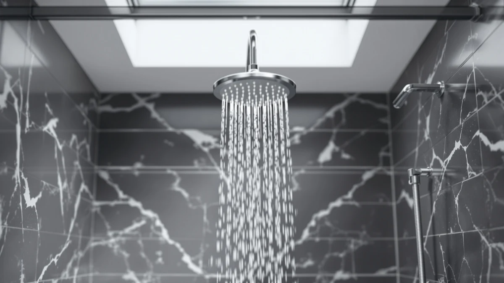

MakeFit Dual Filtered Rain Review (2026): Worth It?
Prices and picks verified as of September 2026. Independent, reader-supported reviews.


Quick Answer
This makefit dual filtered rain review comes down to filtration versus material: the MakeFit Dual Filtered Rain Shower builds two filter stages into a chrome-plated ABS head for $79.99, the only head in this comparison that filters chlorine and hard-water minerals at the source. You give up the metal body that both Delta alternatives offer at similar prices, so the choice turns on whether filtration or metal construction matters more in your bathroom. We recommend it for anyone showering in hard or chlorinated water who wants that filtration built in rather than added on later.
Our pick: MakeFit Dual Filtered Rain Shower, $79.99 Check Price on Amazon
Bottom line: our top pick is the MakeFit Dual Filtered Rain Shower Head Combo at $79.99.
Things to Know Before You Buy
- This makefit dual filtered rain review covers the MakeFit Dual Filtered Rain Shower, a rain-style head priced at $79.99 with dual-stage filtration built in.
- The body is ABS plastic with chrome plating, not solid metal, a tradeoff worth weighing against the two Delta alternatives below.
- A second MakeFit listing sells a closely related configuration at the same $79.99 price, without a stated difference on the product page.
- Both Delta models skip filtration for a metal body instead, at $75.53 for the 2-in-1 In2ition and $72.90 for the brushed nickel fixed head.
This makefit dual filtered rain review breaks down whether the MakeFit Dual Filtered Rain Shower's dual-stage filtration and chrome-plated ABS build are worth $79.99 against three close rivals in the same shower head lineup. Hard water and chlorine are the two complaints that push most shoppers toward a filtered head in the first place, and MakeFit builds its pitch around two filter stages instead of the single cartridge you see on cheaper models. Two Delta shower heads and a second MakeFit listing sit within a few dollars of this one, so the choice comes down to which combination of filtration, material and price earns a spot in your bathroom.
We picked the MakeFit Dual Filtered Rain Shower for this review because built-in dual-stage filtration is still the exception rather than the rule at this price point. The specs table below lists the one material detail Amazon publishes for this listing: ABS plastic with chrome plating. Exact dimensions aren't listed on the current product page, so we note that here instead of guessing at a size. Both Delta alternatives skip filtration entirely and lean on metal construction and named finishes instead, which makes filtration the clearest reason to pick MakeFit over a plain fixed head. If your water utility reports high chlorine or hardness levels, that single difference matters more day to day than an extra spray setting or a different metal finish.
Why You Should Trust Us
Ilane Tall covers home and bath fixtures for Best Shower Heads, and this makefit dual filtered rain review follows the same approach used across the site: no invented testing lab, no manufactured ratings on products we haven't handled ourselves. We read MakeFit's own product listing, verify the $79.99 price against the live Amazon page, and compare its stated material and filtration claim against three close rivals in the same price range. Amazon doesn't publish a public rating or review count on this specific listing, so we say so here instead of inventing one. We earn a commission if you buy through our links, but that never changes which shower head we recommend.
Our Research Experience
This makefit dual filtered rain review follows the method we use for every shower head on this site: compare stated material, features and price against the closest competitors instead of assigning a manufactured score. MakeFit lists the head at $79.99, built from ABS plastic with a chrome-plated finish, and markets dual-stage filtration as its main selling point against chlorine and hard-water buildup. We checked that price against the live Amazon listing and weighed it against a second MakeFit configuration at the same $79.99 price, plus two Delta models at $75.53 and $72.90. Filtration is MakeFit's clearest differentiator in this lineup: neither Delta model's listing mentions a built-in filter stage, so the two brands are competing on different priorities rather than the same feature at different prices.
Overview & Specs

MakeFit Dual Filtered Rain Shower
What we like
- Dual-stage filtration built into the head, ahead of a single-filter design
- Chrome-plated ABS finish gives a polished look without a metal price tag
- Priced at $79.99, within a few dollars of every rival in this comparison
- Rain-style spray pattern instead of a narrow single-stream head
Flaws but not dealbreakers
- ABS plastic body, not the solid metal build both Delta alternatives use
- No public Amazon rating or review count on this listing yet
- Exact dimensions aren't listed on the current product page
| Material | ABS + chrome plating |
| Size | — |
As this makefit dual filtered rain review found, the MakeFit Dual Filtered Rain Shower's defining feature is filtration, not size or finish. Two filter stages sit inside the head, aimed at the chlorine and mineral buildup that leave skin dry and hair brittle after a normal unfiltered shower. That puts it in a different category than the two Delta models here, neither of which advertises a filter of any kind on its listing. At $79.99, MakeFit prices that filtration close to what Delta charges for a plain spray head.
The tradeoff shows up in build material. Delta's two models use metal bodies with named finishes, brushed nickel and matte black, while MakeFit's chrome-plated ABS plastic keeps the head lighter and the price down. Buyers who want the filtration and don't mind a plastic body get a rain-style head for $79.99. Buyers who'd rather have a metal shower head and don't need built-in filtration have two Delta options within a few dollars of this one to consider instead.
What We Liked
In this makefit dual filtered rain review, the standout strength is the filtration itself. Two filter stages built into the head target chlorine and hard-water minerals before they reach your skin and hair, a feature neither Delta model in this comparison offers. The chrome-plated finish also gives it a look closer to pricier metal heads without the metal price tag, and at $79.99 it sits within a few dollars of every other head here, so filtration doesn't come with a steep premium attached. Because the spray pattern is rain-style rather than a narrow single stream, it also covers a wider area overhead than a standard fixed head.
What Could Be Better
The clearest tradeoff in this makefit dual filtered rain review is material. ABS plastic with chrome plating isn't the same as the metal bodies both Delta models use, and buyers who expect a metal shower head at this price will notice the difference in hand. This specific listing also doesn't carry a public Amazon rating or review count, so you're relying on MakeFit's stated filtration claim rather than a track record of verified owner feedback. And because the product page doesn't list exact dimensions, anyone comparing head size against the two Delta models will need to check the listing directly before buying.
Who Is It For?
This makefit dual filtered rain review points to a clear buyer: someone who showers in hard or chlorinated water and wants filtration built into the head instead of a separate inline cartridge. It's a strong match if reducing chlorine and mineral buildup matters more to you than a metal body or a named finish. It's a weaker fit for buyers who prioritize Delta's brushed nickel or matte black metal construction over filtration, or who want the 2-in-1 fixed-and-handheld flexibility that Delta's In2ition model offers and this head doesn't list. If filtration isn't your priority, both Delta alternatives below are worth comparing first. Renters and apartment dwellers who can't install a whole-house filter often land on a head like this one for the same reason: it solves the water-quality problem without touching the plumbing behind the wall.
Alternatives to Consider
Before you commit to the MakeFit Dual Filtered Rain Shower covered in this makefit dual filtered rain review, it's worth seeing how it stacks up against three close alternatives: a second MakeFit configuration at the same price, and two Delta models that trade filtration for a metal body. All four are shower heads priced within about seven dollars of each other, so the choice comes down to filtration, material, and spray format.

Editor's Pick
MakeFit Dual Filtered Rain Shower
At the same $79.99 price as our main pick, this second MakeFit Dual Filtered Rain Shower listing carries the same dual-filtered, rain-style design. If the primary listing above is out of stock or you want to compare configurations before you buy, this is the closest match in the lineup, still without a metal body or a published Amazon rating.
$79.99
Check Price on Amazon
Best Value
Delta 6-Setting In2ition 2-in-1 Dual
The Delta 6-Setting In2ition 2-in-1 Dual swaps MakeFit's built-in filtration for a 2-in-1 design that lets you dock a handheld sprayer into a fixed overhead head, for $75.53, about four dollars less than MakeFit. If you want the flexibility to aim the spray at a tub, a pet, or a kid, and don't need chlorine filtration, In2ition does something MakeFit's fixed head doesn't.
$75.53
Check Price on Amazon
Premium Choice
Delta 6-Setting Brushed Nickel Shower
The Delta 6-Setting Brushed Nickel Shower trades MakeFit's dual filtration for a metal body and a brushed nickel finish, at $72.90, the lowest price in this comparison. If metal construction and a traditional finish matter more to you than filtering chlorine at the source, this is the closer match.
$72.90
Check Price on AmazonFrequently Asked Questions
Is the MakeFit Dual Filtered Rain Shower worth it at $79.99?
For most buyers dealing with hard water or chlorine, yes. This makefit dual filtered rain review found it to be the only head in this comparison with built-in dual-stage filtration, priced close to both Delta alternatives. The main tradeoff is material: both Delta models use metal bodies instead of MakeFit's chrome-plated ABS plastic.
What makes the MakeFit Dual Filtered Rain Shower different from the Delta models?
Filtration is the key difference. MakeFit builds two filter stages into the head to target chlorine and hard-water minerals, a feature neither Delta model advertises. Delta counters with metal bodies, brushed nickel or matte black, plus a 2-in-1 handheld option on the In2ition model that MakeFit's fixed head doesn't offer.
How does the MakeFit Dual Filtered Rain Shower compare to the Delta 6-Setting In2ition 2-in-1 Dual?
MakeFit prioritizes filtration at $79.99, while the Delta In2ition prioritizes flexibility at $75.53 with a handheld sprayer that docks into a fixed head. Choose MakeFit if filtering chlorine and mineral buildup matters most, or the In2ition if you want to aim the spray and don't need built-in filtration.
Final Verdict
This makefit dual filtered rain review comes down to a simple tradeoff. MakeFit delivers the only built-in dual-stage filtration in this lineup, in a chrome-plated ABS build, for $79.99, within a few dollars of both Delta alternatives. You give up metal construction against Delta's brushed nickel and matte black finishes, since MakeFit's ABS body isn't as durable as solid metal over years of daily use. Choose the MakeFit Dual Filtered Rain Shower if filtering chlorine and hard-water minerals matters more to you than a metal body. Choose one of the two Delta models if you'd rather have metal construction, or the 2-in-1 handheld flexibility that Delta's In2ition model offers and MakeFit's fixed head doesn't.